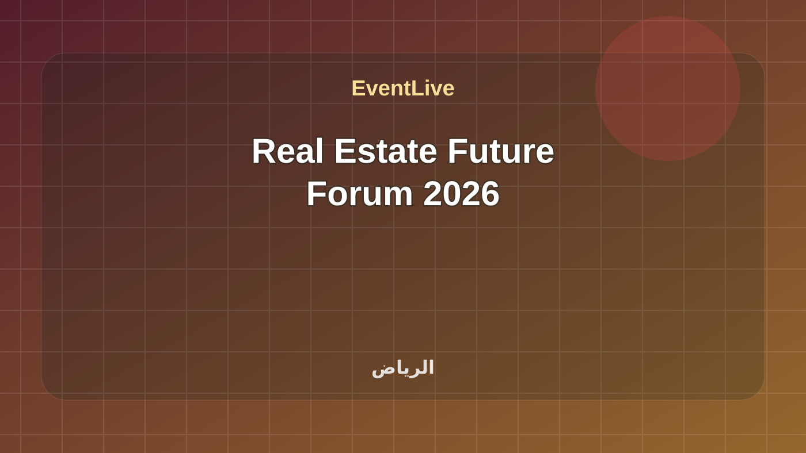

منتهية · فعالية
Real Estate Future Forum 2026
انعقد منتدى مستقبل العقار 2026 في الرياض من 26 إلى 28 يناير، ويُحفظ هنا ببرنامجه الرسمي الكامل للجلسات والحلقات النقاشية وروابط التسجيلات التي نشرها المنظم.
المدينةالرياض
البداية٢٦/٠١/٢٠٢٦، ٩:٠٠ ص
النهاية٢٨/٠١/٢٠٢٦، ٦:٠٠ م
الحالة الحيةجاري حساب الوقت...
8/8
جاهزوقت واضح
جاهزمصدر موثوق · مصدر معتمد
جاهزمدينة محددة
جاهزموقع قابل للوصول
جاهزأجندة متعددة الجلسات
جاهزرابط مشاركة
جاهزتصنيف مفهوم
جاهزجمهور مناسب
ما يحتاجه الزائر بسرعة
متى تبدأ Real Estate Future Forum 2026؟
تبدأ Real Estate Future Forum 2026 في ٢٦/٠١/٢٠٢٦، ٩:٠٠ ص وتنتهي في ٢٨/٠١/٢٠٢٦، ٦:٠٠ م بتوقيت السعودية.
أين تقام Real Estate Future Forum 2026؟
تقام الفعالية في الرياض، Four Seasons Hotel Riyadh.
هل المعلومات موثوقة؟
تعتمد EventLive على Real Estate Future Forum Official أو رابط دليل ظاهر في صفحة الفعالية، مع إبقاء رابط المصدر للمراجعة.
هل يوجد جدول حي لهذه الفعالية؟
نعم، تعرض الصفحة جدولًا حيًا أو جلسات قابلة للمتابعة حسب الوقت.
محاور البرنامج
برنامج منتدى مستقبل العقار 2026 الرسمي: 46 جلسة مكتملة الوقت عبر ثلاثة أيام.
المدة26 إلى 28 يناير 2026
المزودReal Estate Future Forum
المميزات
- 46 جلسة بوقت بداية ونهاية
- بحث وتصفية حسب اليوم
- روابط التسجيلات الرسمية المتاحة
المتطلبات
- هذه نسخة منتهية محفوظة كما نُشرت في أجندة المنظم الرسمية.
برنامج موثق
الجدول الحي
46 جلسة · بتوقيت الرياض
يجري الآنلا توجد جلسة جارية الآن
التالييُحدد حسب الوقت الفعلي
46 جلسة
Opening Ceremony
The Non-Saudi Ownership Law and its Economic Impact Locally and Globally
Elevate and Innovate: Leadership in the Real Estate
Homeownership for a New Generation
The Future of Real Estate
From the Kingdom of Saudi Arabia to the global community
Public-Private Partnerships in Urban Development: Collaborating for Success
Redefining Real Estate Excellence in the Region
Building Vibrant Communities: Strategies for Enhancing Quality of Life
Sustainable Development on a Global Scale: Best Practices and Innovations
Building Strong Foundations: The Role of Government in Real Estate
Real Estate Investment Opportunities and Markets Trends
The impact of the Saudi Building Code on Advancing Sustainability in the Real Estate Industry
Global Insights: Market Trends and International Partnerships
Adapting to Change: Thriving in a Dynamic Real Estate Market
Global Urbanization: Trends in City Development and Infrastructure
Empowering Communities and Fostering Competencies through the Non-Profit Sector
Impact Investing in Real Estate: Creating Social and Environmental Change
Enabling Giga Projects: The Strategic Role of Logistics & Supply Chains in Real Estate Development
Advancing the Housing Finance Ecosystem Through Coordination & Synergy
Investing in Saudi Arabia: Real Estate Trends and Insights
Saudi Real Estate: Evolving from Local Foundations to a Global Investment Landscape
Keynote Housing Program
Municipalities' & Authorities Efforts: Aligning Strategies for Economic Development, Urban Planning
From Mecca, Values Endure and Opportunities Take Form
Real Estate Equilibrium in Riyadh City
Unlocking Opportunities: Innovative Property Investment Strategies
Urban Design: Sustainability and Quality of Life in Real Estate Development
Regulatory Innovation: Regional Integration and the Future of Real Estate Regulation in the GCC
A Closer Look at Real Estate in the Brazilian Market
The Future of Real Estate Marketing: Emerging Technologies and Trends to Watch
Deloitte Real Estate Predictions
A Conversation with Secretary Hillary Clinton
The Destination of Destinations: Building a Global City for Ambition & Opportunity
Qetaifan Projects: Role Example in Real Estate Evolution and Future Development
Tech-Talk: AI & Data in Real Estate
Paving the Way: Empowering Women in Real Estate
New Horizons: The Future of Urban Development
Shaping a Better World: Saudi Arabia's Humanity Projects on the Global Stage
A Conversation with Michael Flynn
Tech Talk: Revolutionizing Real Estate with Technology
Leading the Way: Saudi Arabia's Impact on Global Human Rights
A Conversation with Tucker Carlson
Sustainability in Real Estate: Insights from an Expert
Innovate to Elevate: Shaping a Better Future
A Conversation with Sir Richard Branson